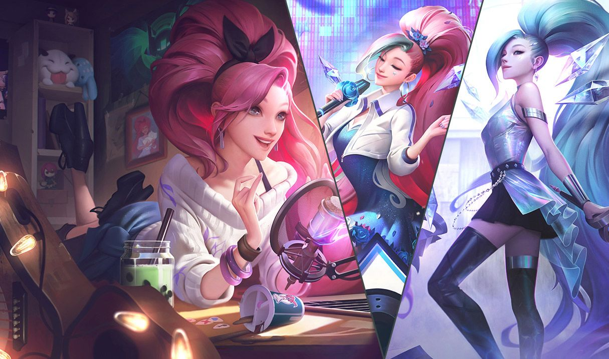

As skins do LoL (League of Legends) são aparências alternativas para os campeões do jogo. Elas mudam o
visual dos personagens e, em muitos casos, também modificam efeitos visuais, sons, animações e falas, mas
não afetam o desempenho ou poder do campeão — ou seja, são cosméticas, não dão vantagem competitiva.
- Cada campeão tem seu visual base (o padrão, com o qual é lançado).
- As skins oferecem variações desse visual, geralmente com temas específicos (ex: futurista, medieval,
terror, colegial, etc)
- Algumas skins são simples (mudam só as cores e a roupa), outras são mais elaboradas, com mudanças em
animações, vozes e até interações com outros campeões.
- Clássicas/Cromas - Mudam apenas a cor do campeão.
- Padrão - Trazem uma roupa ou tema novo, mas sem grandes alterações.
- Épicas - Mudam efeitos visuais e sons.
- Lendárias - Trocam visual, efeitos, voz e animações completamente.
- Míticas - Mudam efeitos visuais e sonoros únicos, algumas têm animações exclusivas ou efeitos especiais
ao entrar no jogo. Pode reaparecer em rotação na Loja Mítica.
- Ultimate - São as mais raras e completas, com transformações durante a partida e muitas novidades.
- Exaltadas - Elas são recompensas para quem pega 1000 EM. Só para
jogadores altamente engajados. Mudam cor, efeitos visuais e às vezes até tema da skin original.
- Transcendentes - Totalmente novas, com transformações ao longo da partida. Narrativa própria e imersiva.
Ainda nenhuma skin lançada oficialmente.
- Comprando com RP.
- Através de baús e orbes (ganhos em eventos)
- Trocando fragmentos de skin obtidos no sistema de loot (espólios)
- Algumas skins são exclusivas de eventos ou comemorativas, podendo ser bem raras.

Valor: 3250 RP
Canção do Oceano de Prestígio
Valor: 125 EM
Valor: 1820 RP
Valor: 1350 RP
Valor: 1350 RP
Valor: 1350 RP
Valor: 1350 RP
Valor: 1350 RP